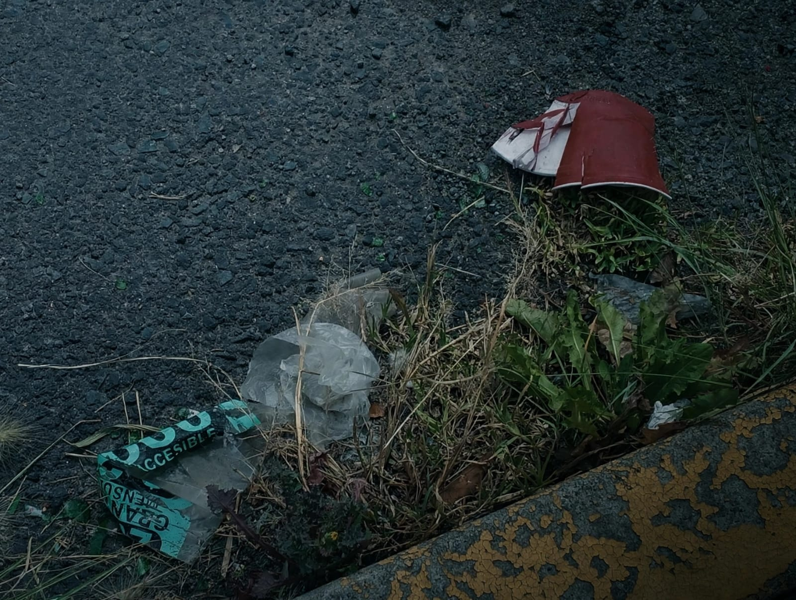
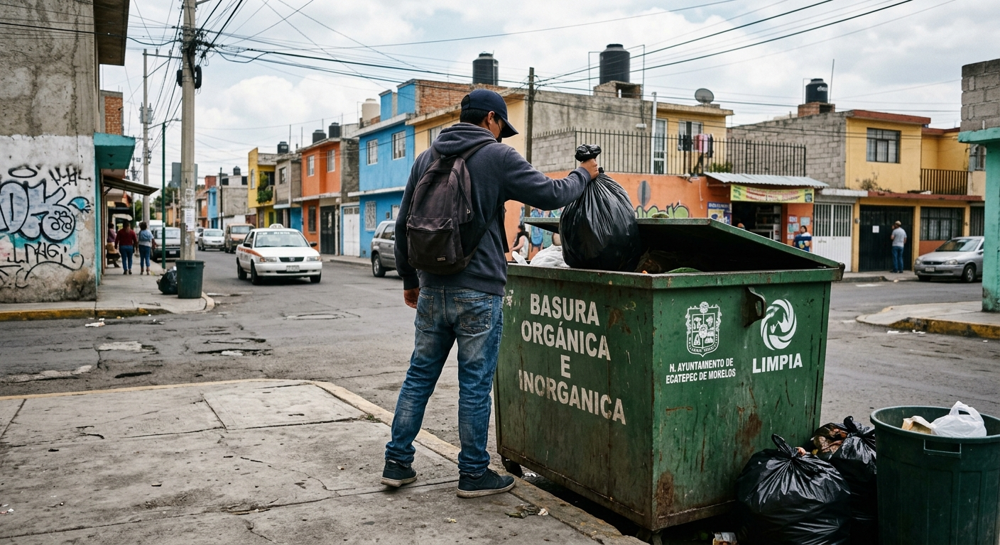

Galería de Trabajo Escolar
Fotos y video juntando y separando la basura:



Video sobre el reciclaje, para los alumnos:
Aprende a separar, reducir y reciclar la basura en tu escuela
Fotos y video juntando y separando la basura:


Video sobre el reciclaje, para los alumnos: